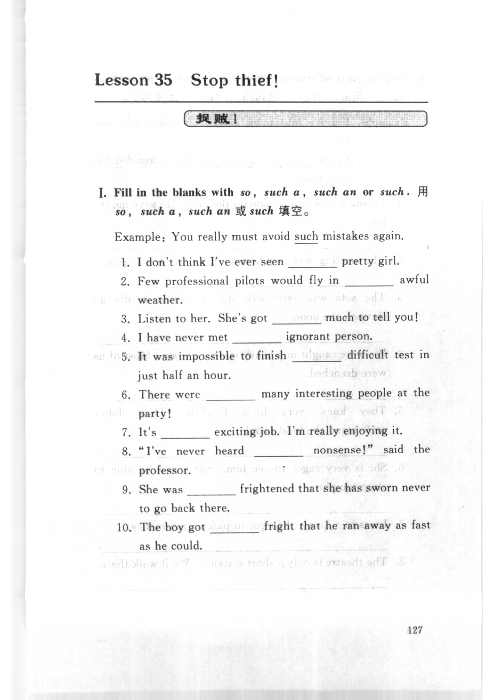
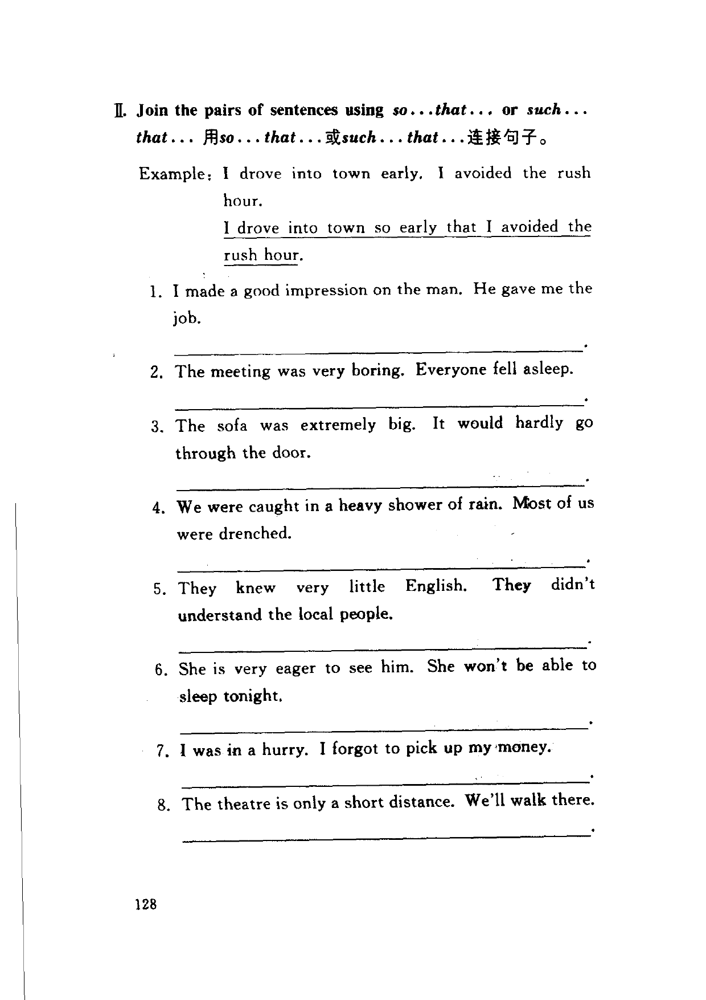
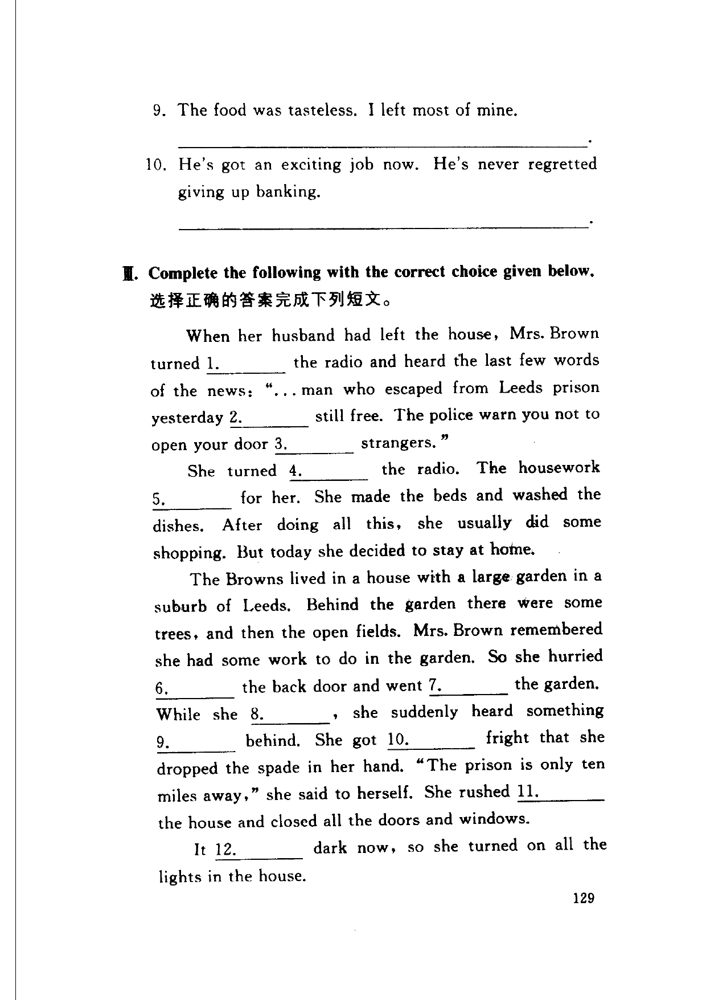
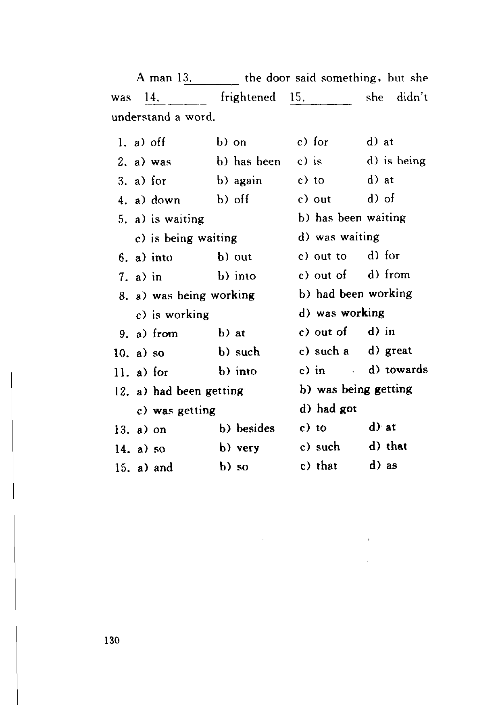

Grammar exercises · 语法练习
I. Fill in the blanks with so, such a, such an or such.
用so，such a，such an 或such 填空。
Example: You really must avoid such mistakes again.
-
I. so/such — I don't think I've ever seen
1.pretty girl. -
I. so/such — Few professional pilots would fly in
2.awful weather. -
I. so/such — Listen to her. She's got
3.much to tell you! -
I. so/such — I have never met
4.ignorant person. -
I. so/such — It was impossible to finish
5.difficult test in just half an hour. -
I. so/such — There were
6.many interesting people at the party! -
I. so/such — It's
7.exciting job. I'm really enjoying it. -
I. so/such — "I've never heard
8.nonsense!" said the professor. -
I. so/such — She was
9.frightened that she has sworn never to go back there. -
I. so/such — The boy got
10.fright that he ran away as fast as he could.
II. Join the pairs of sentences using so . . . that . . . or such . . . that . . .
用so . . . that . . .或such . . . that . . .连接句子。
Example: I drove into town early. I avoided the rush hour.
I drove into town so early that I avoided the rush hour.
-
II. so...that / such...that — I made a good impression on the man. He gave me the job.
-
II. so...that / such...that — The meeting was very boring. Everyone fell asleep.
-
II. so...that / such...that — The sofa was extremely big. It would hardly go through the door.
-
II. so...that / such...that — We were caught in a heavy shower of rain. Most of us were drenched.
-
II. so...that / such...that — They knew very little English. They didn't understand the local people.
-
II. so...that / such...that — She is very eager to see him. She won't be able to sleep tonight.
-
II. so...that / such...that — I was in a hurry. I forgot to pick up my money.
-
II. so...that / such...that — The theatre is only a short distance. We'll walk there.
-
II. so...that / such...that — The food was tasteless. I left most of mine.
-
II. so...that / such...that — He's got an exciting job now. He's never regretted giving up banking.
III. Complete the following with the correct choice given below.
选择正确的答案完成下列短文。
When her husband had left the house, Mrs. Brown turned 1. the radio and heard the last few words of the news: ". . . man who escaped from Leeds prison yesterday 2. still free. The police warn you not to open your door 3. strangers."
She turned 4. the radio. The housework 5. for her. She made the beds and washed the dishes. After doing all this, she usually did some shopping. But today she decided to stay at home.
The Browns lived in a house with a large garden in a suburb of Leeds. Behind the garden there were some trees, and then the open fields. Mrs. Brown remembered she had some work to do in the garden. So she hurried 6. the back door and went 7. the garden. While she 8., she suddenly heard something 9. behind. She got 10. fright that she dropped the spade in her hand. "The prison is only ten miles away," she said to herself. She rushed 11. the house and closed all the doors and windows.
It 12. dark now, so she turned on all the lights in the house.
A man 13. the door said something, but she was 14. frightened 15. she didn't understand a word.
-
III. Choices — turned
1.the radio — a) off b) on c) for d) at -
III. Choices — yesterday
2.still free — a) was b) has been c) is d) is being -
III. Choices — open your door
3.strangers — a) for b) again c) to d) at -
III. Choices — turned
4.the radio — a) down b) off c) out d) of -
III. Choices — The housework
5.for her — a) is waiting b) has been waiting c) is being waiting d) was waiting -
III. Choices — hurried
6.the back door — a) into b) out c) out to d) for -
III. Choices — went
7.the garden — a) in b) into c) out of d) from -
III. Choices — While she
8.— a) was being working b) had been working c) is working d) was working -
III. Choices — heard something
9.behind — a) from b) at c) out of d) in -
III. Choices — got
10.fright — a) so b) such c) such a d) great -
III. Choices — rushed
11.the house — a) for b) into c) in d) towards -
III. Choices — It
12.dark now — a) had been getting b) was being getting c) was getting d) had got -
III. Choices — A man
13.the door — a) on b) besides c) to d) at -
III. Choices — was
14.frightened — a) so b) very c) such d) that -
III. Choices — frightened
15.she didn't — a) and b) so c) that d) as
Original images · 原图对照
Expand a page to compare it with the transcription. Open the original in a new tab to zoom in.
展开原图核对文字，也可以在新标签页打开原图放大查看。
Book page 127 · Exercise I (so, such a, such an or such)
Open original · 打开原图 ↗ Download original · 下载原图


Book page 128 · Exercise II (so...that or such...that, items 1–8)
Open original · 打开原图 ↗ Download original · 下载原图


Book page 129 · Exercise II (items 9–10) and Exercise III (multiple choice passage)
Open original · 打开原图 ↗ Download original · 下载原图


Book page 130 · Exercise III (multiple choice options)
Open original · 打开原图 ↗ Download original · 下载原图


Your notes and answers
Use this space for longer responses or exercises that do not have an individual answer box.